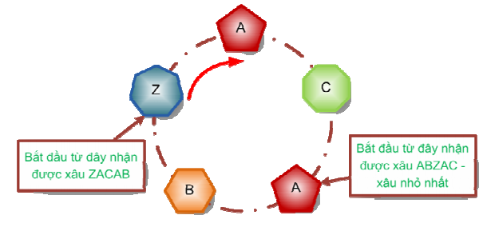

Một hãng đồ trang sức nổi tiếng vừa giới thiệu một mẫu lắc (vòng đeo tay) được tạo thành bằng cách xâu n viên đá quí thành vòng tròn. Đá quí được chọn từ 26 loại khác nhau, mỗi loại được ghi nhãn là một kí tự trong số các kí tự từ‘A’ đến ‘Z’. Lắc được đặt cố định trên giá trong gian trưng bày. Từ viên đá, bằng cách liệt kê các nhãn của các viên đá theo chiều kim đồng hồ ta nhận được xâu kí tự S có độ dài n. Xâu S được gọi là một biểu diễn lắc. Như vậy, ta có thể nhận được n xâu biểu diễn lắc từ n cách chọn vị trí bắt đầu khác nhau.

Yêu cầu: Cho xâu S là một biểu diễn lắc. Hãy xác định xâu Y là xâu biểu diễn lắc nhỏ nhất theo thứ tự từ điển.
Dữ liệu nhập:
- Gồm 1 dòng chứa xâu S có độ dài không quá 100.
Dữ liệu xuất:
- Gồm 1 dòng chứa xâu Y tìm được.